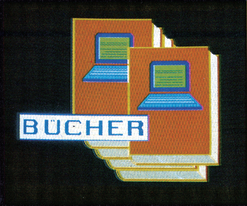

Bücher

Bücher zum Thema Datenfernübertragung gibtesmittlerweile für jeden Geschmack und in jeder Preisklasse. Noch überwiegt allerdings die Einsteigerliteratur. Erst in den letzten Wochen und Monaten kommt mehr lesenswertes für »Hacker« und solche, die es werden wollen, auf den Markt.
Das Datenbanken-ABC
»Blektronifizierter Wissensspeicher« nennt das Buch »Online-Datenbanken« aus dem Sybex Verlag die Datenbanken, von denen es weltweit mittlerweile mehrere tausend gibt. In gründlicher Weise erschließt der Autor nach dem Dreisatz »Know-what — Know-where — Know-how« diese Wissensquellen vor allem kommerziellen Änwendern. Dabei verspricht das sehr umfangreiche Inhaltsverzeichnis allerdings mehr, als das Buch schließlich halten kann. Die Einführung in die Datenbanktheorie ist der ausführlichste Teil des ganzen Buches. Hier wird auch den alten Hasen manches Neue geboten: bibliographische Datenbanken, Referenz- und Quellendatenbanken werden ausführlich erklärt und mit Beispielen erläutert. Das umfangreiche Adressenmaterial, Hard- und Softwareteil, ein erschöpfendes Glossar und zu Datex-P eine große Menge faksımilierte Informationen des Netzbetreibers Bundespost beweisen die gründliche Recherche. Doch die Trennung in wichtige und unwichtige Informationen ist nur teilweise gelungen. Insbesondere beim Teil über Datex-P stelltsich die Frage, warum denn (kostenlose) Broschüren nachgedruckt werden, die sich jeder potentielle Datenbankbenutzer früher oder später ohnehin im Postamt abholen wird. Dieser Platz wäre sinnvoller verwendet gewesen, um das Dutzend aufgezählter Datenbanken von »ECHO« bis »NewsNet« ausführlicher zu beschreiben. Denn die durchschnittlich zehn Zeilen Erklärung reichen nur zum »Hineinriechen«, selbst zum Abschätzen, welche Datenbank nun für den Einzelnen sinnvoll ist, genügt das Material nicht.
Fazit: Das Buch istgutgeeignet als ergänzende Materialiensammlung für fortgeschrittene »Hacker und DFÜ-ler«.
(Joachim Graf/bj)Info: Steffen Schubert: »Onlıne Datenbanken«, Sybex-Verlag, Düsseldorf. ISBN 3-88745-621-]. 199 Seiten, Preis: 49 Mark
Genormtes Händeschütteln
Die ersten zwei Bände der »‚CCITT-Empfehlungen der V-Serie und der X-Serie« »Datenübertragung über das Telefonnetz« und »Datenübermittlungsnetze, Dienste und Leistungsmerkmales) sind inzwischen erschienen. Weitere sechs Bücher sind geplant. Die vorliegenden Bände dokumentieren die Standard-Empfehlungen der achten Vollversammlung der CCITT (Comite Consultatif International Telefonique et Telegraphique), dem international beratenden Ausschuß für den Telegrafen- und Telefondienst und sind von Herrn Postdirektor Walter Tietz vom FTZ in Darmstadt übersetzt und bearbeitet worden. Die Empfehlungen der V- und der X-Serie, beschreiben die verschiedenen Äspekte der Datenkommunikation und sind unter anderem die Grundlage für die Kompatibilität von Postnetzen. Der zweite Band beschäftigt sich deshalb unter anderem mit den Normen. für PAD-Parametern Kapitelüberschriften wie »Äqui valenz zwischen Binärzeicher und den Kennzuständen eine: Zwei-Zustand-Codes« odeı »Schleifenmessung für Mo dems« zeigen, worum es in der zwei Bänden geht: Technik puı und für Laien unverdaulich, fü: Fachleute allerdings unverzicht.
Fazit: Geeignet nur für Telekommunikationsingenieure und Hacker, die vor nichts zurückschrecken, auch nicht vor dem Preis.
(Joachim Graf/bj)Info: CCITT-Empfehlungen der V- und de! X-Serie, 5. Auflage, Rv.Decker's Verlag Heidelberg, ISBN 3-7685-0885-4, 531 Seiten 188 Mark (Band I), ISBN 3-7685-1685-7, 9% Seiten, 44 Mark, (Band 2)
Digitale Postrüume
Der gleiche Verlag gibt die ‚Reihe Taschenbuch Telekommunikation« heraus: »ISDN — Das künftige Fernmeldenetz der Deutschen Bundespost« ist das neueste Buch daraus. Wesentich verständlicher als die CCITT-Reihe befaßt es sich mit Konzeption und Gestaltung des ISDN (dienstintegriertes digitales Fernmeldenetz), das bekanntlicherweise im Laufe der nächsten Jahre das jetzige Telefonnetz ersetzen soll. Geplante ISDN-Dienste und netzgestützte Dienstmerkmale sowie mögliche Endgeräte werden genauso beschrieben wie Übertragungsprotokolle, Netze und Netzübergänge. Weiter werden ISDN-Schlüsselelemente wie das D-Kanal-Protokoll und die »Zeichengabe mittels Zeichengabesystem Nummer 7« einigermaßen verständlich für Anwender und Gerätehersteller beschrieben. Viele Schaubilder und ein umfangreiches Abkürzungsverzeichnis erleichtern zusätzlich das Verstehen. Viel Wert legen die Autoren darauf, ausführlich auf die geplanten ISDN-Endgeräte einzugehen — fast die Hälfte Jes Buches beschäftigt sich damit. Wohl, um den zukünftigen Benutzern »den Mund wäßrig zu machen« Die Autoren — alle Mitarbeiter des Postministeriums — gehen mit keiner Silbe aufdieentstehendenpolitischen Schwierigkeiten (vor allem im 1ISDN-Endgerätemarkt), bei der Durchsetzung des ISDN-Konzepts ein. Sie beschränken sich aufdastechnisch Machbare, ohne ein Wort darüber zu verlieren, daß einiges davon nach wie vor umstritten ist. Für den elektronisch versierten Hacker ist das Buch dennoch eine interessante Lektüre: Um sich schon jetzt auf sein zukünftiges — wi esim Postdeutsch heißt — »atyp sches Nutzverhalten« vorzubereiten.
(Joachim Graf/bj)fo: Peter Kahl: »ISDN, Rv.Decker's Verla eidelberg, ISBN 3-7685-5884-3, 288 Seite reis: 38 Mark
Erfahrungen mit Computer-Büchern gesucht
Wer stand nicht selbst schon vor dem Problem, zu einem bestimmten Gebiet der Datenverarbeitung oder seinem Computer nähere Informationen zu suchen. Die Flut der Fachliteratur macht es oft jedoch recht schwierig, die richtigen Bücher für den gewünschten Zweck zu finden. Wir sind deshalb daran interessiert zu erfahren, welche Bücher Sie bevorzugen, was Sie besonders daran interessiert hat oder auch welche negativen Erfahrungen Sie mit dem einen oder anderen Werk gemacht haben. Schreiben Sie uns weiterhin, welche Gebiete bei den Buchbesprechungen Ihrer Meinung nach mehr oder weniger berücksichtigt werden sollten. Unsere Anschrift lautet: Markt & Technik Verlag AG Redaktion 64'er Stichwort: Bücher Herrn Herbert Buchel Hans-Pinsel-Str. 2 8013 Haar bei München
(bj)